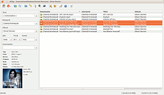
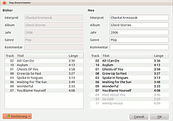

QtTag
Dieser Artikel wurde für die folgenden Ubuntu-Versionen getestet:
Ubuntu 16.04 Xenial Xerus
Ubuntu 14.04 Trusty Tahr
Zum Verständnis dieses Artikels sind folgende Seiten hilfreich:
QtTag ist ein klassisches Programm zum Bearbeiten der Metadaten ("Tags") von zahlreichen Audioformaten, u.a. .flac, .mp3 und .ogg. Vom Design her orientiert sich QtTag an dem unter Windows sehr populären Mp3tag  . Es kann die Tag-Formate ID3 (ID3v1, ID3v2) und APE lesen wie auch schreiben. Ferner können Cover von Amazon importiert und Tags automatisiert via MusicBrainz bezogen werden. Mittels der Automatisierungsfunktionen können Tags auch über Dateinamen generiert werden oder auch umgekehrt Dateinamen durch Tags. Ein Benutzerkommentar:
. Es kann die Tag-Formate ID3 (ID3v1, ID3v2) und APE lesen wie auch schreiben. Ferner können Cover von Amazon importiert und Tags automatisiert via MusicBrainz bezogen werden. Mittels der Automatisierungsfunktionen können Tags auch über Dateinamen generiert werden oder auch umgekehrt Dateinamen durch Tags. Ein Benutzerkommentar:
"Vielen Dank für das tolle Programm. Endlich jemand, der ein Programm mit den wichtigsten Funktionen ausstattet, ohne daraus eine Innovationsorgie zu machen."
Oftmals werden Programme, die die Grafikoberfläche Qt benutzen, fälschlicherweise als KDE-Programme bezeichnet. Dies ist nicht richtig, da reine Qt-Programme (so auch QtTag) keinerlei Abhängigkeiten zum KDE-Desktop haben und somit bei der Installation auch keinerlei KDE-Bestandteile nachladen bzw. installieren.
QtTag ist keine freie Software im Sinne von Open Source, kann aber kostenlos genutzt werden.
Installation¶
Für die Installation stehen fertige .deb-Pakete zur Verfügung, die leicht installiert [1] werden können. Die jeweils aktuelle Version von QtTag lässt sich je nach System-Architektur als 32-bit- und 64-bit-Version herunterladen:

Hinweis!
Fremdpakete können das System gefährden.
Nach der Installation befindet sich unter "Anwendungen -> Multimedia" ein neuer Eintrag. Verzeichnisse oder Dateien können fortan auch via Kontextmenü mit QtTag geöffnet werden. Dabei ist es egal, welche Desktop-Umgebung (GNOME, KDE, usw.) man benutzt, da sich QtTag an die jeweilige Oberfläche anpasst.
Benutzung¶
|  |
| Hauptfenster von QtTag |
Sobald eine Datei ausgewählt wurde, stehen entsprechende Details wie Bitrate, Dateigröße oder Spielzeit in der linken Spalte. Befindet sich ein Bild im Verzeichnis oder ist eines in die Audiodatei eingebettet, so wird dieses als Cover angezeigt. Werden mehrere Dateien markiert, ändert sich die Anzeige in der linken Spalte und es werden nur noch Tags mit selben Inhalt angezeigt.
Bei Tags mit unterschiedlichen Inhalten, z.B. Titeln, ändert sich die Anzeige auf "< beibehalten >". Dieses Verhalten ist äquivalent mit Mp3tag unter Windows und bedeutet, dass die Tags beim Speichern nicht geändert werden. Wählt man hingegen "< entfernen >" aus, werden alle Titel in den Tags gelöscht. Ändert man den Text unter z.B. Titel manuell, so wird dieser in allen markierten Dateien ersetzt.
ID3-Tags¶
Auf der linken Seite können die Tags für Titel, Interpret, Album, Jahr, Titelnummer, Genre und Kommentar editiert werden. Rechts werden diese und noch weitere Tags angezeigt. Die Anzeige kann über das Menü "Einstellungen -> Ansicht" angepasst werden.
Cover¶
Hinweis:
Das Herunterladen von Covern über Amazon ist bei der Version 0.8.3 nicht mehr möglich.
| Cover-Import |
Cover können automatisch von Amazon.de oder Amazon.com bezogen werden. In der Regel reicht es, eine Datei zu markieren und das Symbol für Import anzuklicken. QtTag versucht dann, für das entsprechende Album das jeweilige Cover herunterzuladen. In der Regel gibt es bei Amazon zu ein und demselben Album mehrere Cover, die sich teilweise nicht nur in der Qualität unterscheiden. Mit den beiden Pfeilen kann zwischen bis zu 10 verschiedenen Covern ausgewählt werden.
Je nach Einstellung bettet QtTag das Cover nun in jede markierte Audiodatei ein oder aber speichert es in dem Verzeichnis der Audiodateien ab. Da alle AudioPlayer solche lokalen Cover unterstützen, reicht es vollkommen aus, die Cover einmalig im Verzeichnis zu speichern, anstatt sie in jede Audiodatei separat einzubetten.
Cover können auch exportiert oder gelöscht werden, genauso wie ein lokales Bild als Cover gesetzt werden kann. Diese Funktionen befinden sich im Kontextmenü, wenn man das Coverfeld links unten mit der rechten Maustaste  anklickt.
anklickt.
Import von Tags¶
|  |
| Tag-Import von MusicBrainz |
QtTag kann Tags von MusicBrainz importieren. Dazu müssen zuerst alle Dateien des Albums markiert werden und im zweiten Schritt das Symbol in der Werkzeugleiste (Toolbar) für den Import von Tags angeklickt werden. Wenn QtTag mehrere Treffer gefunden hat und nicht eindeutig entscheiden kann, welches das richtige ist, erscheint ein Auswahlfenster, in dem das richtige Album ausgewählt werden kann. Als nächstes erscheint ein Dialog, mit dem die Reihenfolge der Dateien geändert werden kann, in die die importierten Tags geschrieben werden sollen. Auch dieses Verhalten ist wieder äquivalent zu Mp3tag.
QtTag versucht im Vorfeld bereits die Tags richtig zu sortieren, dieses kann aber manuell oder durch Ändern der Sortierung (es stehen Sortierung durch Track, Titel und Spiellänge zur Verfügung) jederzeit geändert werden. Sind weniger Audiodateien vorhanden als neue Tags, so werden überschüssige Tags ausgegraut dargestellt.
Tags aus Dateinamen generieren¶
Besitzen die Audiodateien keine oder keine brauchbaren Tags, so lassen sich diese über "Filename -> Tag" generieren - sofern die Dateinamen diese Infos hergeben. In der Regel reicht es, die Dateien zu markieren und auf das entsprechende Symbol in der Werkzeugleiste zu klicken. In dem darauf folgenden Dialog wird in den meisten Fällen bereits das richtige Muster ausgewählt und man braucht nur noch mit "OK" den Vorgang bestätigen. Sollte nicht das richtige Muster erkannt werden oder auch gar nicht in der Liste vorhanden sein, kann auch manuell ein Muster eingegeben werden. QtTag zeigt dabei automatisch an, was wie durch das eingegebene Muster erfasst wird.
Dateien automatisch umbenennen¶
Besitzen die Audiodateien bereits verwertbare Tags, so lassen sich anhand dieser Informationen die Dateien automatisch umbenennen. Das Vorgehen ist dabei ähnlich wie bei dem Generieren von Tags und es öffnet sich wieder ein Dialog, in dem man nur auswählen muss, wie die Audiodateien umbenannt werden sollen. Auch hier bietet QtTag wieder einige Vorlagen, aber es kann auch ein eigenes Muster angegeben werden.
Ähnlich komfortabel kann auch das Verzeichnis mittels Tags umbenannt werden. Möchte man hingegen in den Tags einfach nur schnell eine Zeichenfolge löschen wollen, so bietet sich die Funktion "Suchen und Löschen" an. Mit ihr lassen sich in allen markierten Dateien alle Vorkommen des eingegebenen Textes in den Tags löschen.
Doppelte Dateien suchen¶
Mit QtTag lassen sich auch doppelte Dateien suchen. In größeren Musiksammlungen ist es nahezu unmöglich, keine doppelten Dateien zu haben, da z.B. oft in neuen Alben ältere Songs als Lückenfüller benutzt werden. QtTag kann nun doppelte Dateien anhand des Dateinamens oder anhand der Tags suchen und auflisten. In dieser Auflistung werden alle Vorkommen eines bestimmten Songs aufgelistet, so dass mindestens eines der Vorkommen nicht gelöscht werden sollte.
Replay Gain¶
Von QtTag aus lassen sich schnell und bequem auch alle markierten Audiodateien "normalisieren" (Replay Gain), sofern QtGain ab Version 0.90 installiert ist. Die markierten Dateien werden durch Klick auf das Symbol normalisiert, wurde QtGain nicht gefunden, ist es hingegen ausgegraut.
Weitere Informationen zu den Tag-Versionen¶
QtTag unterstützt, wie bereits erwähnt, dass Lesen und Speichern von ID3 (ID3v1, ID3v2) und APE.
ID3v1 ist dabei das beschränkteste Format und unterstützt nur wenige Informationen. Im Klartext heißt das, wenn man nur ID3v1 speichern lässt, wird der ID3v2/APE-Tag gelöscht und ALLE erweiterten Informationen, die nicht in ID3v1 definiert sind, gehen verloren. Dazu gehören auch eventuell eingebettete Cover!
Ferner können in ID3v1 nur Strings mit einer maximalen Länge von 30 Zeichen gespeichert werden, dies kann in einzelnen Fällen zu klein sein und führt unweigerlich zu Verlust, da die Strings passend geschnitten werden. Wer allerdings trotzdem am liebsten ID3v1 benutzen möchte, sollte die Option "Schreibe ID3v2 falls ID3v1 zu klein" aktivieren. QtTag benutzt dann automatisch den ID3v2-Tag, falls ID3v1 zu klein ist und bei allen anderen Speichervorgängen wird aber weiterhin ID3v1 benutzt.
Das APE-Tag ist für alle interessant, die ihre Audiodateien mit mp3gain, vorbisgain und anderen normalisieren. mp3gain schreibt standardmäßig die ermittelten Gain-Werte in ein APE-Tag und erkennt daran, ob diese Datei bereits normalisiert wurde. Wenn man dieses APE-Tag allerdings löscht, sieht es für mp3gain so aus, als wäre die Datei noch nicht behandelt und bearbeitet sie von neuem. Da mp3gain allerdings die MP3-Datei komplett umschreibt, hat man durch Wegfall des APE-Tags sonst keinerlei Einbußen.
Dies sieht aber z.B. bei vorbisgain komplett anders aus, da hier die Dateien nicht umgeschrieben werden und durch Wegfall des APE-Tags die Musikstücke nicht mehr normalisiert abgespielt werden können. Von daher sollte das Lesen und Speichern des APE-Tags aktiviert werden, wenn man seine Musik mit Replay-Gain-Tools normalisiert.
| Genaue Beschreibung der Schaltflächen in der Werkzeugleiste | |
| Button | Beschreibung |
| Manuelles Speichern der Änderungen an den Dateien | |
| Löschen aller eingebetteten Bilder, hat auf lokale Bilder keinen Einfluss | |
| Löschen aller ID3v2-Tags. Falls auch Bilder eingebettet sind, werden diese ebenfalls gelöscht und die Größe der Musikdateien verringert sich entsprechend. | |
| Löschen aller Tags | |
| Öffnet einen Dialog, in dem man ein Verzeichnis auswählen kann, das eingelesen wird. Per Drag & Drop lassen sich aber schneller Dateien oder Verzeichnisse einfügen. | |
| Lädt die aktuellen Dateien neu ein | |
 | Mit dieser Funktion kann man automatisch das Verzeichnis, in dem die Musikdateien liegen, umbenennen lassen. Der Standardwert ist "%i - %a" (Interpret - Album) und ändert das Verzeichnis z.B. in "Chantal Kreviazuk - Ghost Stories" um. Die zuletzt benutze Maske merkt sich QtTag und zeigt diese beim nächsten Mal wieder an. |
| Mit dieser Funktion können auf einfache Weise Musikdateien umbenannt werden, sofern sie richtig getaggt sind. In dem Dialog werden alle verfügbaren Kürzel, sowie eine Vorschau des neuen Dateinamens, der ersten markierten Datei angezeigt. Nach Klick auf OK werden alle markierten Dateien umbenannt. | |
| Dies ist das Gegenstück zur obigen Funktion, mit ihr kann man die Tags der Dateien befüllen, wenn die Dateinamen diese Informationen enthalten. QtTag hat bereits eine kleine Liste an üblichen Formaten gespeichert und wählt diese intelligent aus, so dass in den meisten Fällen nur noch auf OK geklickt werden muss. Diese nützliche Automatik besitzt selbst Mp3tag nicht und auch kein anderer Tagger unter Linux. | |
| Falls weder der Dateiname noch die Tags brauchbare Informationen hergeben, können die Daten oftmals über Musicbrainz heruntergeladen werden. Lediglich bei brandneuen oder wenig bekannten CDs klappt das auch über Musicbrainz nicht immer. | |
| Cover anzeigen lassen. Hinweis: Wer für viele Alben auf einmal alle Cover herunterladen möchte, kann dies mit der Funktion in QtGain tun. Die Funktion in QtTag ist nur für einzelne Alben gedacht. | |
| Dient zum Suchen von doppelten Dateien | |
| Suchen und löschen: Mit dieser Funktion kann Text in den Tags gesucht werden, der augenblicklich in allen markierten Dateien gelöscht wird | |
| Öffnet den Einstellungsdialog: Hier kann u.a. eingestellt werden, welche Infos angezeigt werden sollen oder das Verhalten von QtTag beinflusst werden. Neben den Standard-Spalten, die nicht abgewählt werden können, stehen noch 18 andere Infos zur Verfügung. | |
| Infos zum Programm | |
| Startet QtGain (sofern installiert) und passt bei allen markierten Dateien die Lautstärke an, so dass sie alle gleich laut klingen | |
Konfiguration¶
Über die Symbolleiste am oberen Bildschirmrand und "Einstellungen" gelangt man in den Einstellungsdialog, wo alle Programm-Einstellungen vorgenommen werden können. So kann z.B. eingestellt werden, welche Tags im Hauptfenster angezeigt, welche Tag-Formate gelesen und geschrieben, ob Änderungen automatisch gespeichert oder die Schreibweise der Tags beim Einlesen geändert werden soll. Einstellungen werden in der Datei ~/.config/Vegata/QtTag.conf im Homeverzeichnis gespeichert.
Tastenkürzel¶
| Tastenkürzel | |
| Taste(n) | Funktion |
| F5 | Verzeichnis neu einlesen |
| Entf | Entfernt alle Dateien aus der Baumansicht |
| Strg + Entf | Löscht die markierten Dateien von der Festplatte |
Links¶
Forumsdiskussion zu QtTag - Anregungen, Bugs, Wünsche usw.
QtGain - Anwendung zum Normalisieren von Audiodateien
Multimedia
 Programmübersicht
Programmübersicht
- Erstellt mit Inyoka
-
 2004 – 2017 ubuntuusers.de • Einige Rechte vorbehalten
2004 – 2017 ubuntuusers.de • Einige Rechte vorbehalten
Lizenz • Kontakt • Datenschutz • Impressum • Serverstatus -
Serverhousing gespendet von